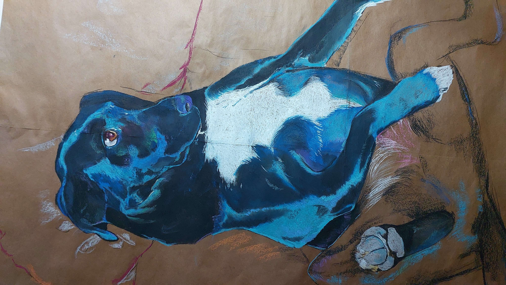
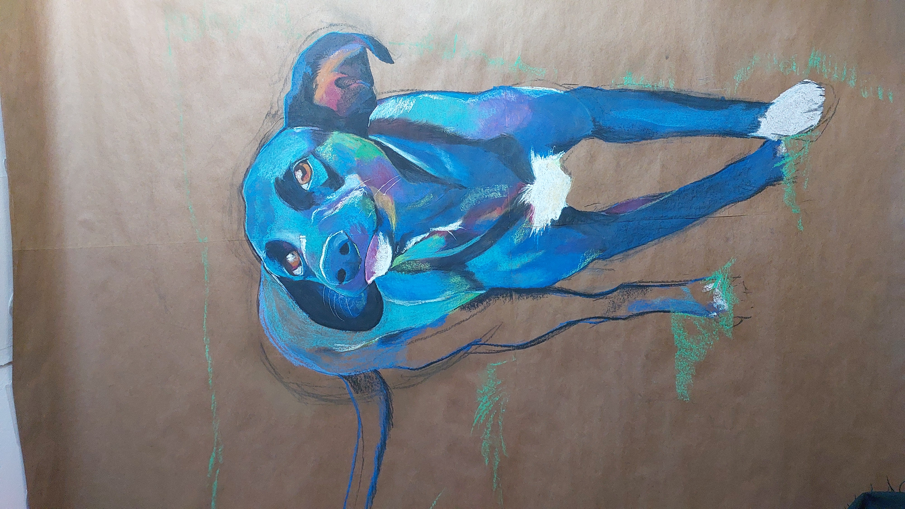
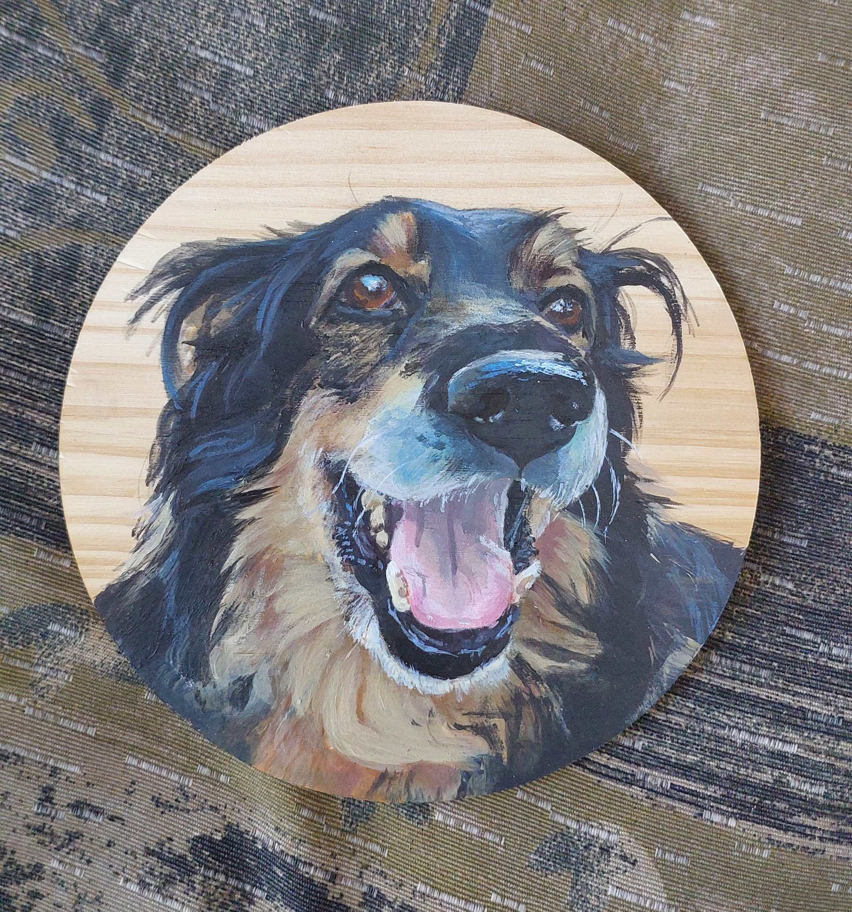

Este trabajo es parte de una serie de dibujos de lapices pastel sobre papel kraft, donde retrato diferentes expresiones de mi mascota Nala (160x210cm)

Otra exploración de las expresiones de Nala (160x210cm)

Retrato acrilico sobre rueda de madera 5mm (15cm).
Conjunto de obras dedicadas a retratar la imagen de dos de mis mascotas: Nala y Chico (Gordo).